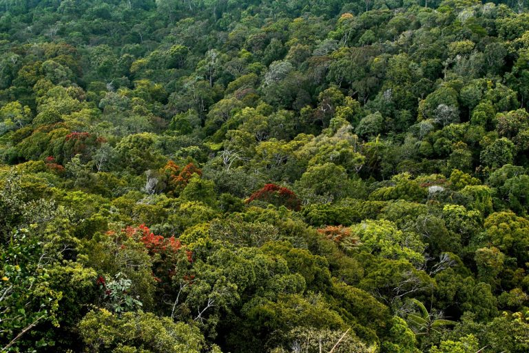
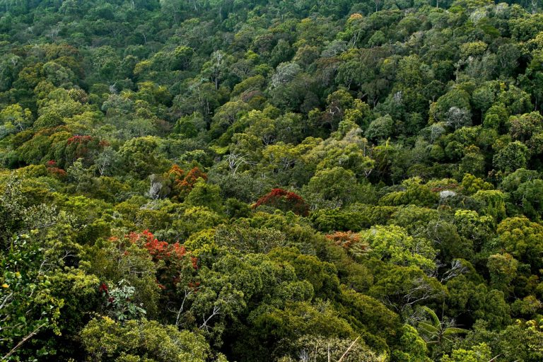

The Department of Wildlife Conservation Conserves the Biodiversity of Sri Lanka. Every individual
species is provided legal protection through the Fauna and Flora Protection Ordinance No 2 of 1937.
Habitats and the associated biodiversity are protected through a network of Protected Areas.DOW is the main
conservation in sri lanka to protect forests and animals.
International Trade of Wild Species are Regulated both using the provisions Fauna and Flora Protection
Ordinance a the Provisions of the Convention on International Trade in Endangered Species of Wild Fauna
and Flora (CITES).


 
